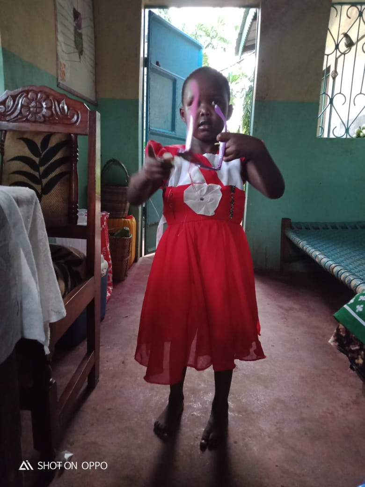

Where It All Started
My childhood was filled with love, laughter, and unforgettable experiences that helped shape the person I am today. I was born and raised in Lamu County, in a small town known as Witu. The area is rich in culture, heavily influenced by Arabs and Muslims because of its close connection to the Indian Ocean and coastal traditions.
Growing up in Witu taught me simplicity, humility, and the importance of community. It was a peaceful environment where children played freely, families knew each other, and culture was deeply celebrated. I also attended my early school years in the same county, which strengthened my roots and connection to home.
